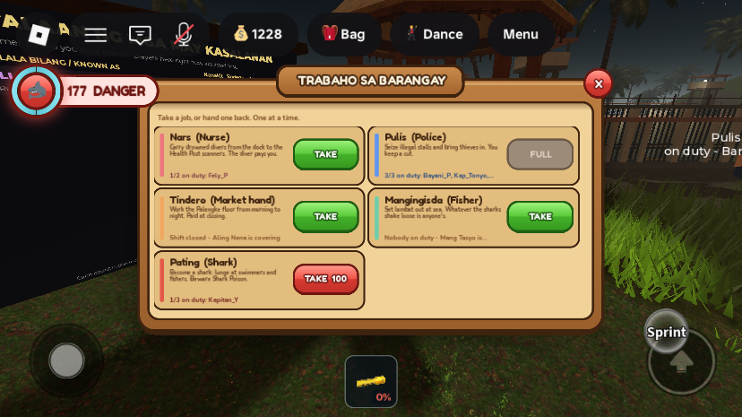
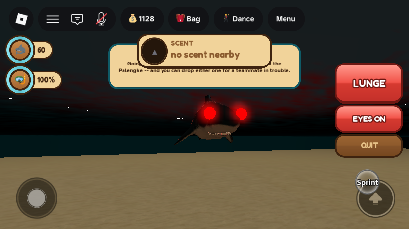
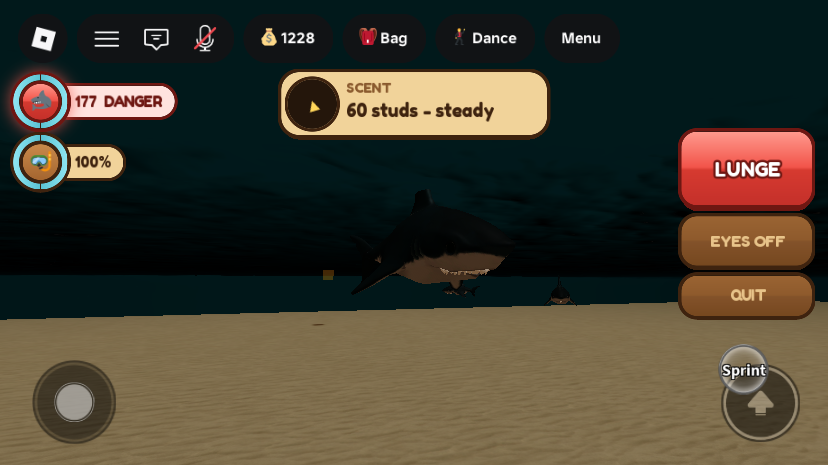
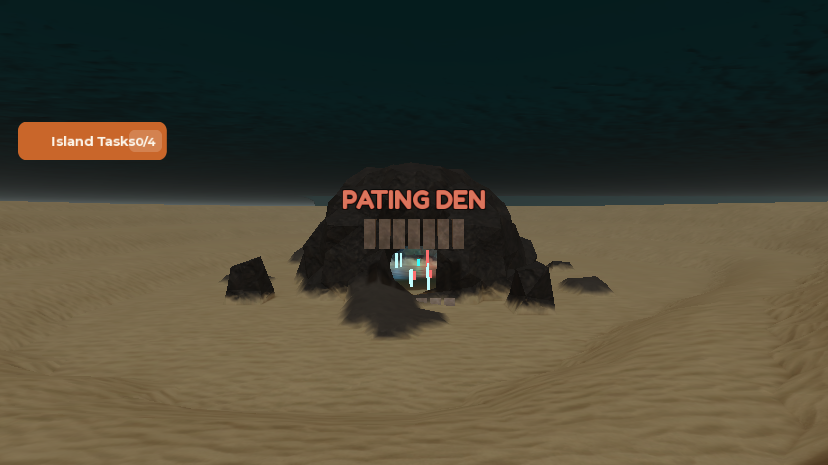
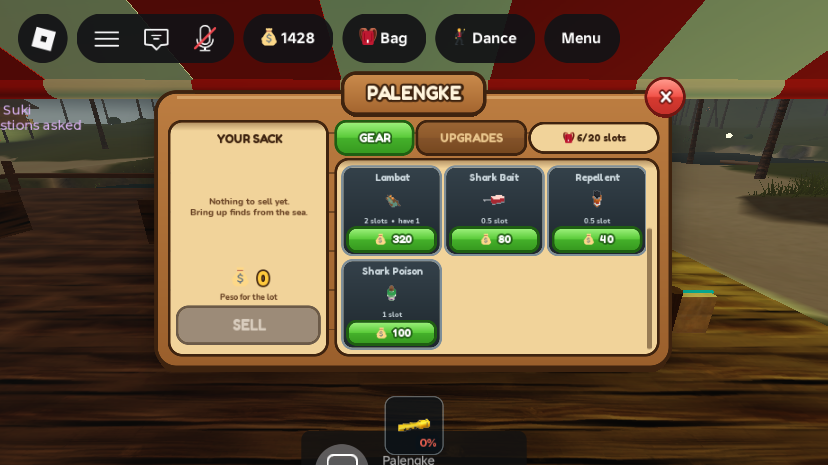
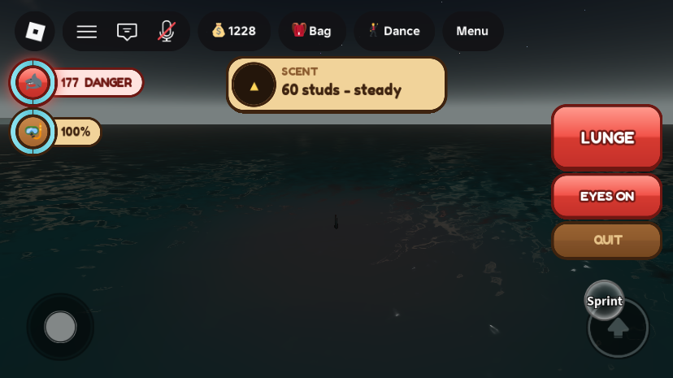

Pating (shark) job and Shark Poison
What was asked
A new job on the Munisipyo work board: Shark. A player who takes it spawns in a Shark Den under the sea and messes with people on the sea: swimmers, cave divers and fishers. The shark jumps out of the water to push a player in and drain their air, so they may drown and be looted. A shark can't hurt the same player again for 10 seconds. A new Palengke item, Shark Poison: if it is equipped when a shark attacks, the shark job is undone, and the player must wait a minute before applying again. The job costs 100. Sharks can swim in the cave but have no flashlight, so they have a sense of smell that says whether they are getting nearer to or farther from a player, and red glowing eyes to see in the dark that other players can see. A sneaking shark leaves the eyes off and goes by scent alone.
Answers settled with the owner before building: Shark Poison is reusable and droppable (100 Peso, 1 bag slot); the poisoned shark dies, becomes human and wakes on the Health Post dock like a drowned player; a shark stays a shark until it quits or is poisoned (no timed shift); no pay for sharks; the 10-second rule is per shark (the owner: "it can be hurt by other shark"); the shark HUD uses the existing wood + neon UIKit look; the board panel is restyled to match.
What changed
1. The job: Pating, 100 Peso, taken at the board

RoleGui) in the wood + neon style, all five jobs visible without scrolling. Pating shows its price on a red button. The roster names in the shot were sent by a test script.RoleService.Roles.pating: cap 3 sharks per server, any time of day, no NPC stand-in (noBot),cost = 100,claimCooldown = 60.- Claiming checks for custody first (Jailed, Reviving, Wanted, in a Shipwreck match) and then charges 100 Peso through
CurrencyService.TrySpend(player, 100, "SharkRole"). A refused or unaffordable claim changes nothing. The ledger reads "Took the Pating (shark) job". - New
RoleService.Revoke(player, seconds): a forced resign that sets the wait before applying again toseconds(60 for a poisoned shark). A voluntary quit still waits the usual 90 s (RECLAIM_COOLDOWN). - New hook
RoleService.OnRoleChanged(player, old, new), called on every claim and resign;SharkPlayerServicelistens so RoleService does not depend on it. - The board's snapshot rows carry
costandnoBot, andRoleBootstrapno longer assumes every role has a bot (the shark row reads "nobody yet").
2. The shark: body, den, lunge, eyes, scent


- Body. Same trick as the Shipwreck minigame: the player's own character is hidden (parts, decals, name/role tags) and
SharkAssets.SharkMesh(9 studs long) is welded on. Its parts go into the existing collision groupShipwreckShark(only planks care about that group), and the mesh is taggedShipwreckSharksoShipwreckClientanimates its tail bones on every client.SwimSpeedOverride = 24. Reset or respawn while holding the job re-embodies and returns to the den. - No tools. A shark cannot hold any tool (flashlight, axe, poison): anything that lands in its character is unequipped at once server-side, its flashlight is forced off, and the hotbar is hidden. Nothing is taken from the bag.
- Air and land. No air drain for a shark (
BreathService). Out of the water it can only flop along at 5 studs/s, and after 8 s on dry ground the sea takes it back to the den. - Lunge. LUNGE button (or F, or a click in the world on desktop) →
RequestSharkLunge→ the server checks role, water and an 8 s cooldown, then tells the shark's client to leap (the client owns its physics): 95 up and 32 forward, measured at about 17 studs of height. For 1.4 s the server checks for victims within 9 studs of the shark: swimming players, and anyone within 12 studs above the water (a fisher on a bangka, someone at a pier's edge). Not sharks, not players who are Jailed, Reviving or in a Shipwreck match, and not anyone this shark hit in the last 10 s. - What a hit does. The victim loses 18 of their 45 base air, is unseated and shoved away from the shark, and tumbles for 1.5 s. If that empties their air it goes through the normal
BreathService.Drownpath (bag scatters where they fell, dock revive), so others can loot them. The shark's HUD says who it shoved. - Immunity is per shark. The same shark cannot hit the same person for 10 s. A different shark can. This matches the ambient sharks' own 10 s disengage.
- Red eyes. Two small neon red balls on the head plus one red
PointLight(range 18) so the shark can see in the cave. They are made on the server, so every player sees them. EYES button or R toggles (RequestSharkEyes, attributeSharkEyes). Lit by default. - Scent. Every 0.25 s the server sends the nearest swimmer or waterline player within 300 studs: distance, direction, and whether it is getting warmer or colder. The scent chip on the HUD shows a needle that turns with the camera, "N studs" and "warmer / colder / steady". Smell ignores walls; there is no scent when nobody is in range.
- Quit. QUIT (or X) asks "ARE YOU SURE?", then
RequestRole("none"); the shark is put back into its avatar and placed on dry ground by the board. Taking the job again costs 100 Peso again. - Ambient sharks never target a shark player (
SharkService); a shark player is not counted into the Shipwreck lobby (ShipwreckService); the island's "DO NOT SWIM" banner is hidden on a shark's screen so it does not sit on the scent chip.
3. The Pating Den

A basalt dome on the natural basin at (80, -27, 540), about 250 studs south of Baybayon Beach, with 27 studs of water above. Outer radius 22, hollow radius 15 (about 14 studs of headroom), two mouths (north and east), a sand floor, glowing algae (teal/blue/red) for light and a row of teeth over the north mouth. New SharkDen.Spawns.DenSpawn_1..3 are the places a fresh shark appears. The dome is outside SharkService.CAVE_BOUNDS, so ambient sharks' roam points are unaffected.
4. Shark Poison

ItemConfig.Items.sharkpoison: 1 slot, 100 Peso,usable = false, never spent. It appears in the Palengke automatically (SortedShopItems).- It is a hotbar tool named
SharkPoison(TOOL_FORinInventoryService, hotbar slot 9, not bodega-gated). It can be dropped and picked up like other gear. - When a shark's lunge reaches someone whose character holds a
SharkPoisontool, the lunge does not land: the shark's job is revoked (RoleService.Revoke(shark, 60)), its body is removed, a green cloud puffs where it died, both sides get a message, andReviveService.Beginputs it on the Health Post dock like a drowned diver. The poison is not used up, and the shark keeps its bag (the drowned stash is not fired).
5. The board panel restyled (owner's choice)
RoleHud was still the old dark panel. It is rebuilt on UIKit: wood panel, sign, glossy buttons, cream rows on a two-column grid so all five jobs fit on a phone, and the Tindero's shift meter and toasts in the same style. Same remotes and the same RoleGui.Panel path, so CursorGuard still frees the cursor while it is open.
The shark's screen

All changes
| Path | What | |
|---|---|---|
| new | ServerScriptService.SharkPlayerService (ModuleScript) | body, den spawn, tools guard, lunge, poison kill, eyes, scent, land timeout, cleanup, Studio hooks |
| new | ServerScriptService.SharkPlayerBootstrap (Script) | one line: SharkPlayerService.Init() |
| new | StarterPlayer.StarterPlayerScripts.SharkClient (LocalScript) | HUD, leap, keys F / R / X, hides hotbar and DO NOT SWIM banner |
| edited | ServerScriptService.RoleService | Pating role, cost, Revoke, OnRoleChanged, snapshot fields |
| edited | ServerScriptService.RoleBootstrap | bot-less role guard in board text and bot labels |
| edited | ServerScriptService.SharkService | ambient sharks skip SharkRole players |
| edited | ServerScriptService.BreathService | no drain for SharkRole |
| edited | ServerScriptService.InventoryService | TOOL_FOR.sharkpoison, HOTBAR_RANK.SharkPoison = 9 |
| edited | ServerScriptService.CurrencyService | ledger source SharkRole |
| edited | ServerScriptService.ShipwreckService | lobby ignores SharkRole players |
| edited | ReplicatedStorage.ItemConfig | new item sharkpoison |
| edited | StarterPlayer.StarterPlayerScripts.Hotbar | order table gains SharkPoison |
| edited | StarterPlayer.StarterPlayerScripts.SprintScript | 5 studs/s on land for a shark |
| rewritten | StarterPlayer.StarterPlayerScripts.RoleHud | UIKit board panel, two columns, price on the button |
| backup | ServerStorage._Retired.StarterPlayer_StarterPlayerScripts__RoleHud_preShark | the previous RoleHud, disabled |
| new | ServerStorage.ItemAssets.SharkPoison (Model), SharkPoisonTool (Tool) | bottle prefab for drops; the hotbar tool (Handle + welded green bottle, no scripts) |
| new | ReplicatedStorage.ItemIcons.sharkpoison | picture source for the Palengke tile and hotbar |
| new | Workspace.IslaMarahuyo.Activities.SharkDen | Spawns (3 markers), Teeth, Glow, Sign |
| terrain | Terrain around (80, -27, 540) | basalt dome, flooded hollow, sand floor, two mouths, 9 boulders; a 16×26 channel cleared in front of the north mouth |
New remotes (in ReplicatedStorage.Remotes, created by SharkPlayerService): RequestSharkLunge (client→server), RequestSharkEyes (client→server, boolean), SharkStatus (server→client: lungeGo, scent, hit, toast).
New player attributes (memory only): SharkRole, SharkEyes, SharkLungeReadyAt (server time), and SwimSpeedOverride is set while a shark.
Tuning constants (top of SharkPlayerService): SWIM_SPEED 24, SHARK_LENGTH 9, LUNGE_COOLDOWN 8, LUNGE_WINDOW 1.4, LUNGE_REACH 9, AIR_COST 18, IMMUNE_SECONDS 10, KNOCK_SECONDS 1.5, SCENT_RANGE 300, LAND_GRACE 8, POISON_WAIT 60. In SharkClient: LEAP_UP 95, LEAP_FORWARD 32. Role cap 3, cost 100 and wait 60 are in RoleService.Roles.pating.
Studio-only test hooks (only created when RunService:IsStudio(), in ServerStorage): DebugPatingLunge:Fire(player, ignoreCooldown), DebugPatingDummy:Fire(cframe, holdsPoison, name) (a stand-in victim in workspace.PatingTestDummies, which also gets ShoveCount and AirLost attributes), DebugPatingClear:Fire().
Testing
Every new and edited script passed a loadstring compile check in Edit. Solo playtests on the iPhone 6 Plus emulation, each ended by kicking the player from the Server datamodel. Startup log: "[SharkPlayerService] Pating job online", no errors.
- Claim: real path (
RequestRole("pating")from the client). 100 Peso charged (balance shown byRequestShellsfell by exactly 100),SharkRoleandSwimSpeedOverrideset, avatar hidden (Head transparency 1), mesh and 2 eyes present, collision groupShipwreckShark, spawned inside the den, Humanoid state Swimming, SharkGui on and Hotbar off. - Lunge and immunity (against a stand-in dummy in the water): first lunge shoved it once and cost 18 air; a second lunge within 10 s did nothing; the cooldown was enforced when not bypassed. A real client press (
RequestSharkLunge) also worked and hit a dummy about 6 studs away. - Leap height: measured on the client: 46 up gave 3.3 studs above the surface, 70 gave 8.6, 90 gave 15.3, 120 gave 33.9. That is why it is 95.
- Poison: a lunge at a dummy holding a
SharkPoisontool: the dummy was not shoved, the shark's role andSharkRolewere cleared, the mesh was gone, the head visible again, the collision group restored, and the player wasRevivingon the Health Post dock, then walked out after a bot revive (28 s). Applying again straight away was refused; applying again later was accepted (and charged). - Item: bought at the Palengke (balance 1628 → 1528), the tool appeared in the backpack, was held in the character when equipped, was dropped as
Dropped_sharkpoison(the tool left the backpack) and shows in the Palengke with its icon. - Eyes: toggled over the remote: attribute, eye transparency and light all followed (screenshots above).
- No tools: equipping a tool while a shark left the character holding nothing.
- Quit:
RequestRole("none")returned the player to the plaza by the board with the avatar visible, no mesh, group restored, SharkGui off, Hotbar on. - Water test: the first version raycast down from above, which the den roof blocks, and never saw a victim at depth. Replaced by a terrain voxel read (works under roofs and at any depth); the lunge tests above ran on it.
- Board panel: phone layout; the first version showed three rows and needed scrolling, so it was widened to two columns (all five jobs visible in the screenshot).
Not verified / known gaps
- No real multiplayer test. Every victim in testing was a stand-in dummy or the player themself. The real-player path (a swimming Humanoid state, a fisher on a bangka, a seated player being unseated, a real drowning through
BreathService.Drownand looting) was not exercised. Needs 2+ accounts (Test → Clients and Servers, or a published test server). - A real player holding poison was checked only as "a tool named SharkPoison in the character" (a dummy, and a real equip on the test avatar). The full lunge-at-a-real-player-holding-it case has not run.
- Shoving a real victim uses a server-side velocity on their root plus 1.5 s of
PlatformStand; the ambient sharks' bite does the same, but the feel on a real client is unseen. - Not tested: cave swimming as a shark (the water test is a voxel read and the state check is Swimming, so it should hold under cave roofs), the F/R/X keys and the click-to-lunge on a real keyboard, the 8 s land timeout, shark reset/respawn while holding the job, a shark leaving the game, taking the job with three sharks already up (FULL), and refusal messages when Jailed or Wanted.
- The den's north mouth still has one boulder near it (the channel was cleared, but not re-verified in a playtest after the last terrain change other than one Edit-mode picture). The teeth are flat grey wedges and read as plain slabs.
- The island's first-dive tip ("Going deep? Carry an O2 tank...") can still pop up over a shark's scent chip for the first time it enters the water. The left status column still shows the ambient shark count ("177 DANGER") for a shark.
- Numbers are first pass: cap 3 sharks, 18 air, 8 s cooldown, 300 stud scent, 24 swim speed, 100 Peso role and 100 Peso poison.
- A shark's held-in-the-bag Flashlight is left in the backpack, unequipped; it is not removed from the bag.
- Old
RoleHudbehaviour kept: the board panel does not close when you walk away from it.
Test-account state: MERS_Cov2 spent about 900 Peso during testing (the 100 Peso role fee on every claim, plus 100 for one Shark Poison, which was then dropped and expired). Nothing else was changed on the account. No values need reverting; the test hooks exist only in Studio, and the test dummies were cleared.